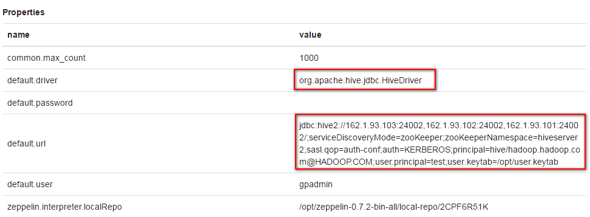
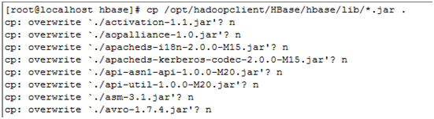
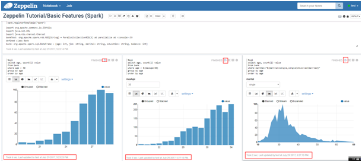
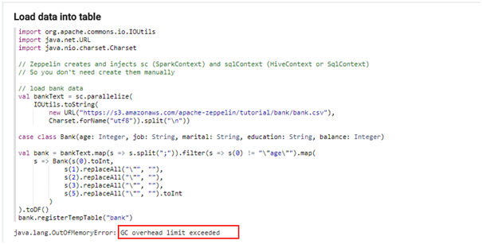
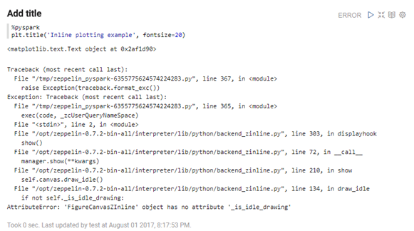

Zeppelin对接FusionInsight HD¶
适用场景¶
Zeppelin 0.7.2 ↔ FusionInsight HD V100R002C60U20 (HBase/Hive/Spark/SparkR)
安装Zeppelin¶
操作场景¶
安装Zeppelin0.7.2
前提条件¶
- 已完成FusionInsight HD客户端的安装。
操作步骤¶
-
将软件包zeppelin-0.7.2-bin-all.tgz上传至/opt目录下，解压生成zeppelin-0.7.2-bin-all目录。
tar -zxvf zeppelin-0.7.2-bin-all.tgz -
启动和停止Zeppelin
bin/zeppelin-daemon.sh start bin/zeppelin-daemon.sh stop

-
配置Zeppelin环境变量，在profile文件中加入如下变量
vi /etc/profile export ZEPPELIN_HOME=/opt/zeppelin-0.7.2-bin-all export PATH=$ZEPPELIN_HOME/bin:$PATH -
编辑zeppelin-env.sh文件，位置/opt/zeppelin-0.7.2-bin-all/conf
cd /opt/zeppelin-0.7.2-bin-all/conf/ cp zeppelin-env.sh.template zeppelin-env.sh vi zeppelin-env.sh
加入如下内容：
export JAVA_HOME=/opt/jdk1.7.0_51/
编辑zeppelin-site.xml文件，位置/opt/zeppelin-0.7.2-bin-all/conf/
cp zeppelin-site.xml.template zeppelin-site.xml
将zeppelin-site.xml中端口8080替换成18081（可自定义，也可以不改）
sed -i 's/8080/18081/' zeppelin-site.xml

-
运行zeppelin
cd /opt/zeppelin-0.7.2-bin-all/ ./bin/zeppelin-daemon.sh start -
在浏览器中输入地址zeppelin_ip:18081登陆，zeppelin_ip为安装zeppelin的虚拟机IP。

-
根据产品文档创建用户test，并赋予足够权限，下载用户test的keytab文件user.keytab，上传至/opt/目录下。
-
编辑zeppelin-site.xml文件，将zeppelin.anonymous.allowed参数的true修改为false。

- 编辑shiro.ini文件，位置/opt/zeppelin-0.7.2-bin-all/conf/shiro.ini
cp shiro.ini.template shiro.ini vi shiro.ini
[urls]authc表示对任何url访问都需要验证

[users]下增加用户test，密码Huawei@123

- 重启zeppelin。
cd /opt/zeppelin-0.7.2-bin-all/ ./bin/zeppelin-daemon.sh restart - 使用test用户登陆Zeppelin
Zeppelin连接Hive¶
操作场景¶
Zeppelin中配置JDBC解析器，对接Hive的JDBC接口。
前提条件¶
-
已经完成Zeppelin 0.7.2的安装；
-
已完成FusionInsight HD客户端的安装，包含Hive组件。
操作步骤¶
-
将
/opt/hadoopclient/Hive/Beeline/lib/下的jar包拷贝至/opt/zeppelin-0.7.2-bin-all/ interpreter/jdbc/目录下。 -
将从新拷贝过来的jar包的属主和权限修改为和/opt/zeppelin-0.7.2-bin-all/ interpreter/jdbc/下原有的jar包相同
chown 501:wheel *.jar chmod 644 *.jar -
编辑zeppelin-env.sh文件，位置/opt/zeppelin-0.7.2-bin-all/conf，加入以下三个配置内容
export JAVA_HOME=/opt/hadoopclient/JDK/jdk export ZEPPELIN_INTP_JAVA_OPTS="-Djava.security.krb5.conf=/etc/krb5.conf -Djava.security.auth.login.config=/opt/zeppelin-0.7.2-bin-all/conf/jaas.conf -Dzookeeper.server.principal=zookeeper/hadoop.hadoop.com -Dzookeeper.request.timeout=120000" export HADOOP_CONF_DIR=/opt/hadoopclient/HDFS/hadoop/etc/hadoop -
从FusionInsight客户端下载用户test的user.keytab和krb5.conf文件，将krb5.conf文件放在/etc/下
-
使用
vi /opt/zeppelin-0.7.2-bin-all/conf/新建hbase的认证文件jaas.conf，内容如下:Client { com.sun.security.auth.module.Krb5LoginModule required useKeyTab=true keyTab="/opt/user.keytab" principal="test" useTicketCache=false storeKey=true debug=true; };其中用户为在FusionInsight Manager中创建的test用户，将test的keytab文件user.key放在/opt/目录下
-
登陆Zeppelin，选择右上角菜单中的 Interpreter

-
选择JDBC，点击 edit 编辑，修改default.driver和default.url参数，点击 save 保存
default.driver：org.apache.hive.jdbc.HiveDriver default.url：jdbc:hive2://162.1.93.103:24002,162.1.93.102:24002,162.1.93.101:24002/;serviceDiscoveryMode=zooKeeper;zooKeeperNamespace=hiveserver2;sasl.qop=auth-conf;auth=KERBEROS;principal=hive/hadoop.hadoop.com@HADOOP.COM;user.principal=test;user.keytab=/opt/user.keytab -
重启zeppelin。
source /opt/hadoopclient/bigdata_env kinit –kt /opt/user.keytab test cd /opt/zeppelin-0.7.2-bin-all/bin ./zeppelin-daemon.sh restart -
页面选择Notebook -> Create new note

- 自定义note名称，例如hive

-
编辑note，点击右侧“执行”按钮。
%jdbc Show tables; Select * from workers_info; -
查看结果

Zeppelin连接HBase¶
操作场景¶
Zeppelin中配置Hbase解析器，对接Hbase
前提条件¶
-
已经完成Zeppelin 0.7.2的安装；
-
已完成FusionInsight HD客户端的安装，包含HBase组件。
操作步骤¶
- 将
/opt/hadoopclient/HBase/hbase/lib/以下的jar包拷贝至/opt/zeppelin-0.7.2-bin-all/interpreter/hbase/目录下，overwrite选择n

-
在/opt/zeppelin-0.7.2-bin-all/interpreter/hbase/下新建目录zeppelin_hbase_jar
mkdir /opt/zeppelin-0.7.2-bin-all/interpreter/hbase/zeppelin_hbase_jar -
将/opt/zeppelin-0.7.2-bin-all/interpreter/hbase/下与FusionInsight冲突的38个jar包移动到zeppelin_hbase_jar目录中
- commons-codec-1.5.jar
- commons-collections-3.2.1.jar
- commons-configuration-1.9.jar
- commons-lang-2.5.jar
- commons-logging-1.1.1.jar
- guava-15.0.jar
- hadoop-annotations-2.6.0.jar
- hadoop-auth-2.5.1.jar
- hadoop-client-2.5.1.jar
- hadoop-common-2.5.1.jar
- hadoop-hdfs-2.5.1.jar
- hadoop-mapreduce-client-app-2.5.1.jar
- hadoop-mapreduce-client-common-2.5.1.jar
- hadoop-mapreduce-client-core-2.5.1.jar
- hadoop-mapreduce-client-jobclient-2.5.1.jar
- hadoop-mapreduce-client-shuffle-2.5.1.jar
- hadoop-yarn-api-2.6.0.jar
- hadoop-yarn-client-2.5.1.jar
- hadoop-yarn-common-2.6.0.jar
- hadoop-yarn-server-common-2.5.1.jar
- hbase-annotations-1.0.0.jar
- hbase-client-1.0.0.jar
- hbase-common-1.0.0.jar
- hbase-common-1.0.0-tests.jar
- hbase-hadoop2-compat-1.0.0.jar
- hbase-hadoop-compat-1.0.0.jar
- hbase-prefix-tree-1.0.0.jar
- hbase-protocol-1.0.0.jar
- hbase-server-1.0.0.jar
- httpclient-4.5.1.jar
- httpcore-4.4.1.jar
- jettison-1.1.jar
- netty-3.6.2.Final.jar
- slf4j-api-1.7.10.jar
- slf4j-log4j12-1.7.10.jar
- xmlenc-0.52.jar
-
zookeeper-3.4.6.jar
-
最终/opt/zeppelin-0.7.2-bin-all/interpreter/hbase/有152个jar包

-
编辑zeppelin-env.sh文件，位置/opt/zeppelin-0.7.2-bin-all/conf，加入以下三个配置内容
export JAVA_HOME=/opt/hadoopclient/JDK/jdk export ZEPPELIN_INTP_JAVA_OPTS="-Djava.security.krb5.conf=/etc/krb5.conf -Djava.security.auth.login.config=/opt/zeppelin-0.7.2-bin-all/conf/jaas.conf -Dzookeeper.server.principal=zookeeper/hadoop.hadoop.com -Dzookeeper.request.timeout=120000" export HBASE_HOME=/opt/hadoopclient/HBase/hbase -
从FusionInsight客户端下载用户test的user.keytab和krb5.conf文件，将krb5.conf文件放在/etc/下
-
使用
vi /opt/zeppelin-0.7.2-bin-all/conf/新建hbase的认证文件jaas.conf，内容如下:Client { com.sun.security.auth.module.Krb5LoginModule required useKeyTab=true keyTab="/opt/user.keytab" principal="test" useTicketCache=false storeKey=true debug=true; };其中用户为在FusionInsight Manager中创建的test用户，将test的keytab文件user.key放在/opt/目录下
-
登陆Zeppelin，选择右上角菜单中的 Interpreter
-
选择hbase，点击 edit 编辑，修改hbase.home参数，点击 save 保存
hbase.home：/opt/hadoopclient/HBase/hbase
-
重启zeppelin
source /opt/hadoopclient/bigdata_env kinit –kt /opt/user.keytab test cd /opt/zeppelin-0.7.2-bin-all/bin ./zeppelin-daemon.sh restart -
页面选择Notebook -> Create new note
- 自定义note名称，例如hbase

- 编辑note，点击右侧 执行 按钮
%hbase create 'test2', 'cf' put 'test2', 'row1', 'cf:a', 'value1'

- 在FusionInsight的客户端下可以看到创建的hbase表test2和数据

Zeppelin连接Spark¶
操作场景¶
Zeppelin中配置Spark解析器
前提条件¶
- 完成Zeppelin0.7.2的安装；
- 已完成FusionInsight HD V100R002C60U20和客户端的安装，包含Spark组件。
- 参考http://zeppelin.apache.org/docs/latest/interpreter/spark.html
操作步骤¶
- 将
/opt/zeppelin-0.7.2-bin-all/lib/目录下的原有的相关的jar包删除 - hadoop-auth-2.6.0.jar
- hadoop-common-2.6.0.jar
- scala-compiler-2.11.7.jar
- scala-library-2.11.7.jar
- scala-parser-combinators_2.11-1.0.4.jar
- scala-reflect-2.11.7.jar
-
scala-xml_2.11-1.0.2.jar
-
将
/opt/hadoopclient/Spark/adapter/dev_lib/下的以下jar包拷贝到/opt/zeppelin-0.7.2-bin-all/lib/目录下 - hadoop-auth-2.7.2.jar
- hadoop-common-2.7.2.jar
- scala-compiler-2.10.4.jar
- scala-library-2.10.4.jar
-
scala-reflect-2.10.4.jar
-
将
/opt/zeppelin-0.7.2-bin-all/lib/下的jackson的相关jar包删除 - jackson-annotations-2.5.0.jar
- jackson-core-2.5.3.jar
- jackson-core-asl-1.9.13.jar
- jackson-databind-2.5.3.jar
-
jackson-mapper-asl-1.9.13.jar
-
将
/opt/hadoopclient/Spark/adapter/dev_lib/下的jackson相关的jar包拷贝到/opt/zeppelin-0.7.2-bin-all/lib/下 - jackson-annotations-2.4.0.jar
- jackson-core-2.4.4.jar
- jackson-core-asl-1.9.13.jar
- jackson-databind-2.4.4.jar
- jackson-jaxrs-1.9.13.jar
- jackson-mapper-asl-1.9.13.jar
- jackson-module-scala_2.10-2.4.4.jar
-
jackson-xc-1.9.13.jar
-
将步骤1和步骤2所有从spark客户端拷贝过来的jar包的属主和权限修改为和
/opt/zeppelin-0.7.2-bin-all/lib/下原有的jar包相同chown 501:wheel *.jar chmod 644 *.jar -
编辑zeppelin-env.sh文件，位置
/opt/zeppelin-0.7.2-bin-all/conf，加入以下内容export MASTER=yarn-client export SPARK_HOME=/opt/hadoopclient/Spark/spark export HADOOP_CONF_DIR=/opt/hadoopclient/HDFS/hadoop/etc/hadoop -
登陆Zeppelin，选择右上角菜单中的 Interpreter
- 选择Spark，点击 edit 编辑，将 Master 参数改为 yarn-client，点击 save 保存

-
重启zeppelin
source /opt/hadoopclient/bigdata_env kinit –kt /opt/user.keytab test cd /opt/zeppelin-0.7.2-bin-all/bin ./zeppelin-daemon.sh restart -
执行zeppelin的spark样例代码zeppelin Tutorial -> Basic Features(Spark)
样例代码需要访问Internet上的资源，所以保证zeppelin所在的节点可以联网，检测是否能打开以下链接


- 执行zeppelin的spark样例代码Zeppelin Tutorial -> Matplotlib (Python • PySpark)
安装python-matplotlib
yum install python-matplotlib
wget https://repo.continuum.io/archive/Anaconda2-4.4.0-Linux-x86_64.sh
sh Anaconda2-4.4.0-Linux-x86_64.sh
export PATH=/root/anaconda2/bin/:$PATH
选择Spark，点击 edit 编辑，将 zeppelin.pyspark.python 参数改为Anaconda安装目录中的python，点击 save 保存

执行zeppelin的pyspark样例代码Zeppelin Tutorial -> Matplotlib

Zeppelin连接SparkR¶
操作场景¶
Zeppelin中配置Spark解析器，连接SparkR
前提条件¶
- 完成Zeppelin0.7.2的安装；
- 已完成FusionInsight HD V100R002C60U20和客户端的安装，包含Spark组件。
- 参考http://zeppelin.apache.org/docs/latest/interpreter/spark.html
操作步骤¶
- 由于Spark的Executor上也需要执行R，所以除了在Zeppelin的节点上安装R以外，所有FusionInsight集群节点上也要安装同版本的R，安装步骤如下：
不同OS配置yum源时下载的文件路径有所不同，下面以Redhat6.6安装R为例
如果安装R的节点无法访问互联网，参考FAQ进行R的安装
- 配置Redhat6.6的yum源
cd ~
rpm -aq | grep yum | xargs rpm -e --nodeps
wget http://mirrors.163.com/centos/6/os/x86_64/Packages/python-iniparse-0.3.1-2.1.el6.noarch.rpm
wget http://mirrors.163.com/centos/6/os/x86_64/Packages/yum-metadata-parser-1.1.2-16.el6.x86_64.rpm
wget http://mirrors.163.com/centos/6/os/x86_64/Packages/yum-3.2.29-81.el6.centos.noarch.rpm
wget http://mirrors.163.com/centos/6/os/x86_64/Packages/yum-plugin-fastestmirror-1.1.30-40.el6.noarch.rpm
wget http://mirrors.163.com/centos/6/os/x86_64/Packages/python-urlgrabber-3.9.1-11.el6.noarch.rpm
rpm -ivh python-iniparse-0.3.1-2.1.el6.noarch.rpm
rpm -ivh yum-metadata-parser-1.1.2-16.el6.x86_64.rpm
rpm -U python-urlgrabber-3.9.1-11.el6.noarch.rpm
rpm -ivh yum-3.2.29-81.el6.centos.noarch.rpm yum-plugin-fastestmirror-1.1.30-40.el6.noarch.rpm
cd /etc/yum.repos.d/
wget http://mirrors.163.com/.help/CentOS6-Base-163.repo
sed -i 's/$releasever/6/g' /etc/yum.repos.d/CentOS6-Base-163.repo
yum clean all
yum makecache
- 配置EPEL的源
Redhat 6.x 使用下面命令安装
rpm -Uvh https://mirrors.tuna.tsinghua.edu.cn/epel//6/x86_64/epel-release-6-8.noarch.rpm
-
更新cache
yum clean all yum makecache -
执行
yum install R安装R的相关的包 -
执行
R，检查R是否可用
正常启动如下图所示

- FusionInsight客户端下测试是否可以使用sparkR
source /opt/hadoopclient/bigdata_env kinit test sparkR - 正常启动如下图所示

- 参考http://zeppelin.apache.org/docs/0.7.2/interpreter/r.html#using-the-r-interpreter 在R的命令行中安装sparkR样例需要的R的libraries
install.packages('devtools')
install.packages('knitr')
install.packages('ggplot2')
install.packages(c('devtools','mplot','googleVis'))
install.packages('data.table')
install.packages('sqldf')
install.packages('glmnet')
install.packages('pROC')
install.packages('caret')
install.packages('sqldf')
install.packages('wordcloud')

-
重启zeppelin
cd /opt/zeppelin-0.7.2-bin-all/bin/ ./zeppelin-daemon.sh restart -
在Zeppelin中执行Zeppelin Tutorial -> R (SparkR)样例

FAQ¶
- FusionInsight集群不允许访问网络，如何安装R
在集群外同版本的Redhat版本下按照本文中yum源的方式进行安装R的操作，最后一步不要执行yum install R
执行yum install yum-utils安装yumdownloader
执行yumdownloader R --resolve --destdir=/tmp/packages把所有的rpm安装包下载到/tmp/packages中
将/tmp/packages中的所有rpm包复制到集群每个节点的/tmp/packages中
切换到集群每个节点的/tmp/packages中，执行yum localinstall *.rpm完成安装
- 连接hbase出现AuthFialed for /hwbackup/hbase

原因：zeppelin的原理hbase的jar包与从FusionInsight客户端下拷贝过来的jar冲突。
解决：将zeppelin中原有的重名jar包移走或删除，全部用FusionInsight客户端下的相关jar包。
- Zeppelin连接spark是报如下NoSuchMethodError

原因：jar包冲突
解决：删除/opt/zeppelin-0.7.2-bin-all/lib/下原有jar包scala-reflect-2.11.7.jar，替换为FusionInsight客户端下的jar包，重启zeppelin
- Zeppelin执行Spark样例代码时报GC overhead limit exceeded

原因：内存不够
解决：安装Zeppelin的节点的内存需要16G以上
- 执行zeppelin的样例代码Zeppelin Tutorial/Matplotlib (Python PySpark)报如下错误

原因：python版本问题
解决：安装Anaconda2-4.4